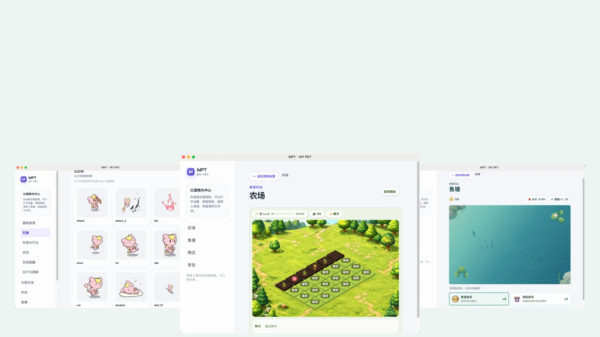
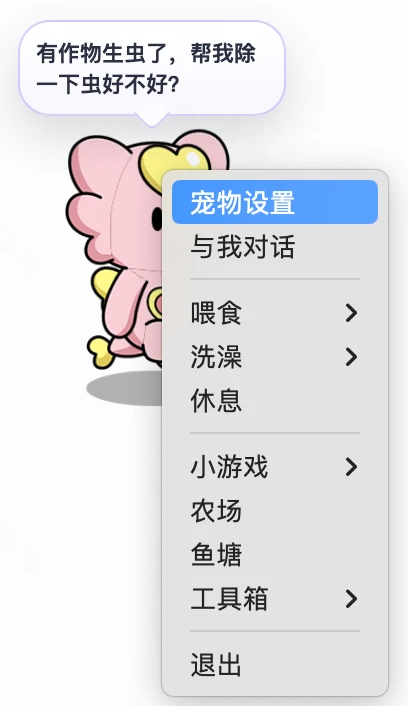

一起慢慢熟悉
喂食、洗澡、休息。每一次照顾，都让你们更亲近一点。

认识 MPT
从一只小伙伴，到一片小天地。
播种、浇水、除虫、收割，再把喜欢的装饰摆进农场。
就在你的桌面上
从今天的第一声招呼，到该休息时的一句提醒。
喂食、洗澡、休息。每一次照顾，都让你们更亲近一点。
连接自己的 AI 服务，让小伙伴带着它的性格与你对话。
喝水、休息、下班打卡。定时或循环提醒，按你的节奏来。

图片压缩、抠图、PDF 与压缩包处理。文件处理在本机完成。
带它回家
正在获取最新正式版…
64 位 Windows
获取 Windows 版Apple 芯片 · M 系列
获取 macOS 版x64 · x86_64
获取 Linux 版将 MPT 拖入「应用程序」。当前安装包未签名；确认下载自本项目后，若系统仍提示“已损坏”，可在终端执行：
sudo xattr -cr /Applications/MPT.app此操作仅移除 MPT 的隔离标记。